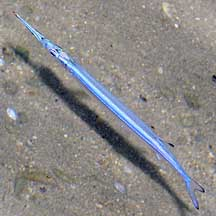
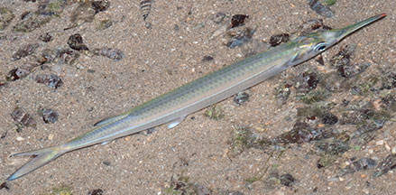
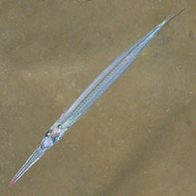
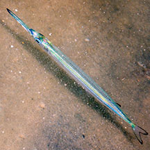
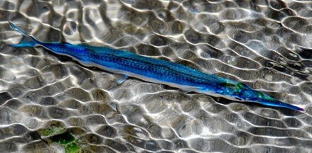

|
|
| fishes text index | photo index |
| Phylum Chordata > Subphylum Vertebrate > fishes > Family Hemiramphidae |
| Quoy's
halfbeak Hyporhamphus quoyi* Family Hemiramphidae updated Sep 2020 Where seen? This long stick-like fish with a short, blunt lower jaw is sometimes seen on our shores. Usually seen alone near coral rubble or reefs. Features: Those seen about 10-15cm, can grow to 30cm long. Body cylindrical, silvery, sometimes bright blue. The lower jaw is not as elongated as those in other halfbeaks and has a reddish tip. Dorsal fin has black edges. Tail fin is forked. |
 Tanah Merah, May 10 |
 Sisters Island, Dec 10 |
| Human uses: It is marketted fresh and dried salted. |
*Species are difficult to positively identify without closer examination.
On this website, they are grouped by external features for convenience of display.
| Quoy's halfbeaks on Singapore shores |
On wildsingapore
flickr
|
| Other sightings on Singapore shores |
 Tanah Merah, Jun 09 Photo shared by James Koh on flickr. |
||
 Tanah Merah, Jul 10 Photo shared by Marcus Ng on flickr. |
 Pulau Semakau, Oct 11 Photo shared by Jerome Pang on facebook. |
|
Links
|